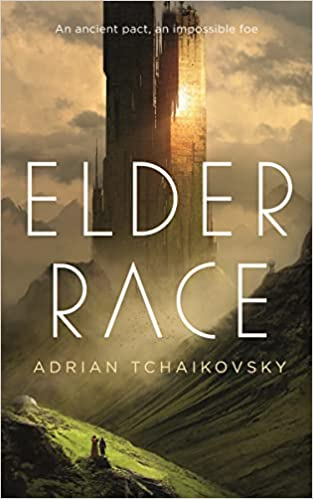

Elder Race, by Tchaikovsky
Saturday April 2, 2022
As mentioned in its dedication, Tchaikovsky's 2021 short novel Elder Race is heavily inspired by Wolfe's 1967 story Trip, Trap. What's new?
- Some female characters instead of all-male cast
- Lots of exploration of using technology to fight depression
- Last of high-tech civilization is protagonist rather than villain
- Villain is less familiar than "just" a telepathic alien
Both explore the idea of advanced technology being indistinguishable from magic (Arthur C. Clarke's quote) with fantasy and sci-fi POV characters. Perhaps the most interesting thing about both stories, and perhaps more so Elder Race, is the idea that there is a level of understanding well beyond that of the high-tech human "wizard."
Mostly it's straightforward fun though. In the end they destroy what they don't understand and live happily ever after.
